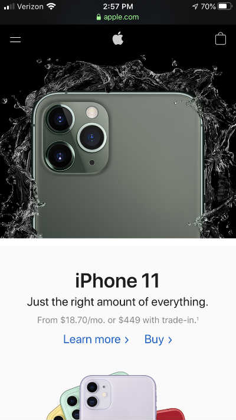

Hick's Law
Apple
apple.com Hick's Law states that with more choices the more likely people will take longer to make decisions and the more difficult your website will be to use.
Apple wants people to buy their products and they have made it easy to do so by only offering a couple of options at a time.
Their homepage lists their newest products. You can only see one product at a time and then it only gives you the options to either learn more or buy.
This makes it easy on the user because they don't have to work hard at deciding what they want to do.
Rule of Thirds
Photoshop
photoshop.comThe picture displayed on the Photoshop homepage exemplifies the Rule of Thirds.
The Rule of Thirds says that an image should be divided by two equally spaced vertical lines and two equally spaced horizontal lines and that important elements of the image should be situated at the intersections of the lines or along them.
The cloud that the child is riding is along the bottom third and the child sits at the intersection of the right bottom lines.
Contrast
Adobe
adobe.comAdobe's homepage is a great example of Contrast. They have used contrast to make the important elements of their homepage pop.
The first thing you see is their bright red logo. They have made it really bright against a dark blue background so that it really draws your eye.
They have also used contrast to draw your eye to the large white letters that read "Creatitivity for all."
The next thing your eye is drawn to is the bright blue "Start your free trial" button. The brightness of the blue contrasts with the dark blue background.